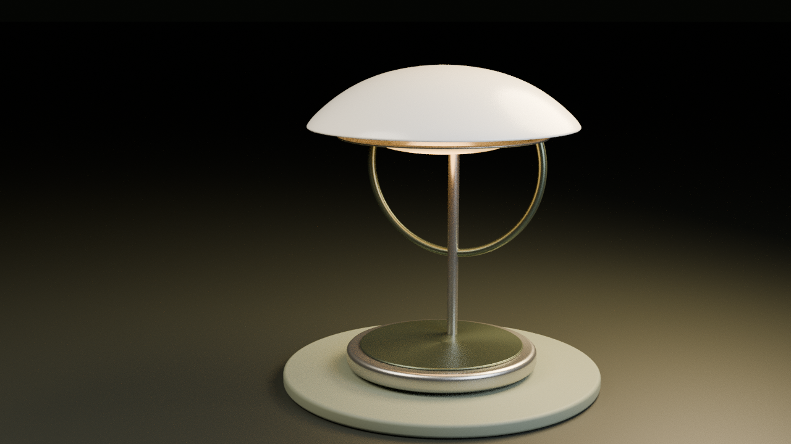

Landing page premium
Hierarquia visual, microinterações e motion pensado para desktop, toque e preferência de movimento reduzido.
Da interface ao objeto, do render à narrativa. Demonstrações originais com fonte editável, procedimentos reproduzíveis e evidências de execução. Sem contratação ou publicação externa.
Hierarquia visual, microinterações e motion pensado para desktop, toque e preferência de movimento reduzido.
Volume e luz a serviço da apresentação do produto. Interação, scroll e fallback para equipamento sem WebGL.

Tipografia, produto e montagem em uma composição programática. Dez segundos de tipografia, produto e trilha original, renderizados localmente.
Sirva esta pasta por HTTP local para navegar nas demonstrações. Abra as instruções de cada projeto antes de instalar ou renderizar. Emulação/software não substituem teste em equipamento físico.